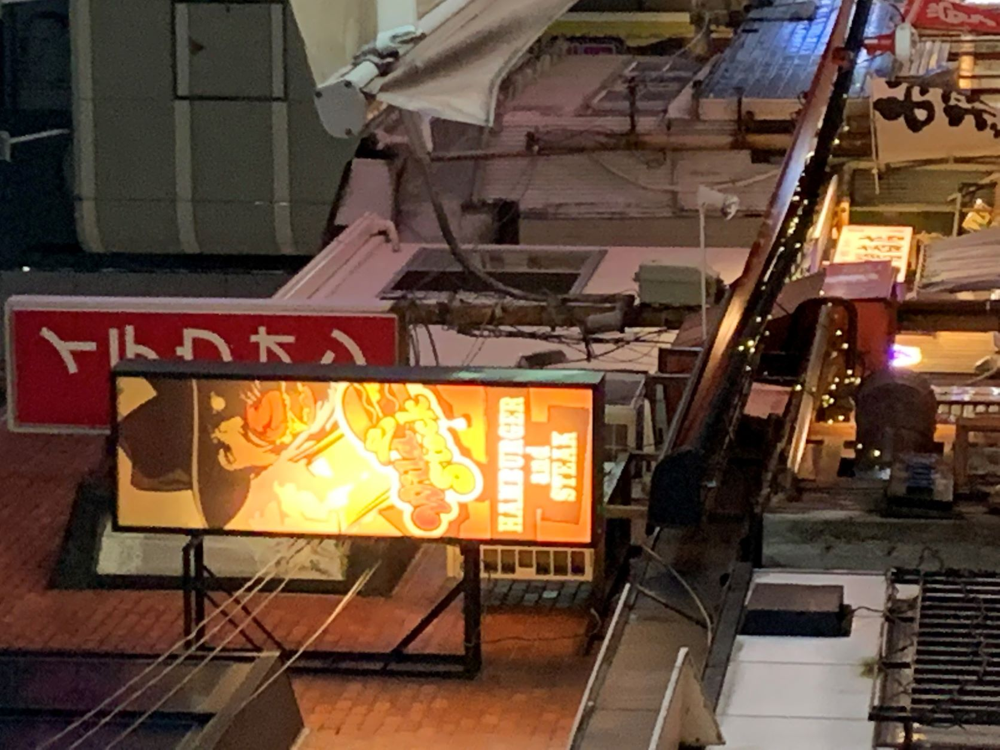

これは川崎の市役所通り付近で、私が撮った写真。そば屋ということで和を感じられるように周りの淵のデザインを緑色にしているのがとても好印象であった。また、名前の部分を赤まるでかこっているのも店の名前を覚えてもらうにはいいと思った。
写真２

これはとある裏どおりで撮った写真である。見づらいとは思うが、結という店に私は注目した。酒場であるのにも関わらず、出会いの場である雰囲気を漂わせているからだ。どの店よりも、看板を前に出しているのもお客を引くために重要だと感じさせる写真でもある。
写真３
これは２つ目の写真を撮った付近にあるお店である。ハンバーガーなどを中心に売っているお店である。看板の後ろに潜むカウボーイがハンバーガーのかぶりついていて面白いと思たため、これを選んだ。